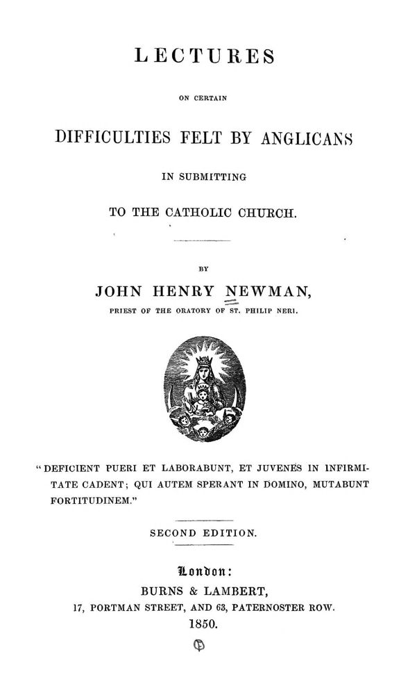
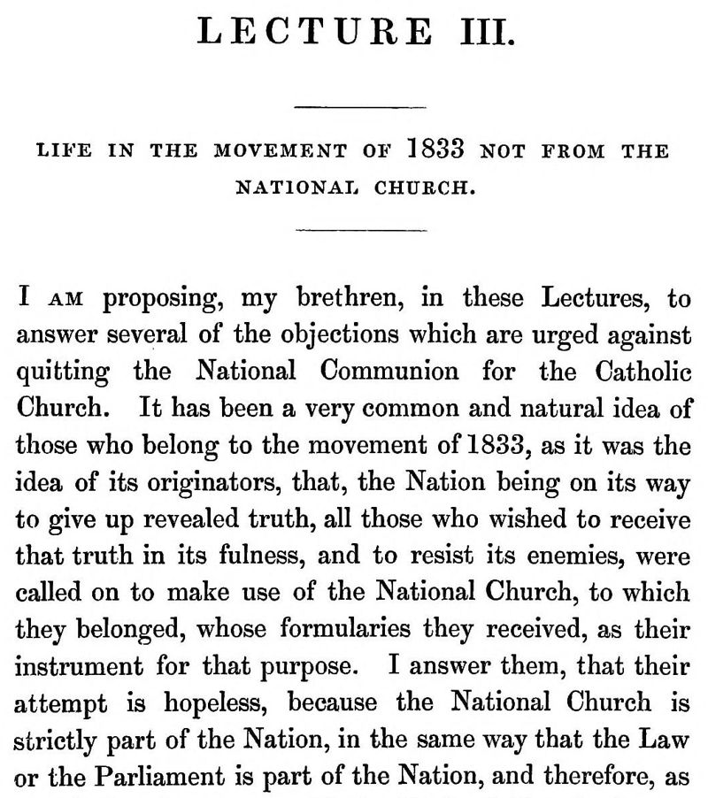

“The Nation being on its way to give up revealed truth” (Lecture III, p. 57)
English: 2nd ed., London 1850, Lecture III, p. 57, scan n74. Highlighted: the words Lecky quotes.

I am proposing, my brethren, in these Lectures, to answer several of the objections which are urged against quitting the National Communion for the Catholic Church. It has been a very common and natural idea of those who belong to the movement of 1833, as it was the idea of its originators, that, the Nation being on its way to give up revealed truth, all those who wished to receive that truth in its fulness, and to resist its enemies, were called on to make use of the National Church, to which they belonged, whose formularies they received, as their instrument for that purpose. I answer them, that their attempt is hopeless, because the National Church is strictly part of the Nation, in the same way that the Law or the Parliament is part of the Nation, and therefore, as the Nation changes, so will the National Church change. That Church, then, cannot be used against the spirit of the age, except as a drag on a wheel …

Lecky’s text (ch. II, at note 14): “They believed, in the emphatic words of their great leader, that ‘the nation was on its way to give up revealed truth.’” He recasts Newman’s participle as a sentence (“was on its way” for “being on its way”). The belief he ascribes to the movement is the one Newman ascribes to it; the next sentence, in which Newman calls their attempt “hopeless”, is not Lecky’s concern.
Further down the rabbit hole
Sources that Lecky cites in the notes next to the ones that cite this page.
- Augustine, De civitate DeiSeventy reports, not miracles, and a town, not a province
- Farmer, A Dissertation on MiraclesA dissenting minister argues that the Devil cannot work miracles
- Middleton, A Free Inquiry into the Miraculous PowersMiddleton’s exorcists and what Lecky altered in quoting him
- Locke’s Commonplace Book on Inspiration and MiraclesHume’s argument against miracles, seventy years before Hume
- Brewster, Memoirs of the Life, Writings, and Discoveries of Sir Isaac NewtonLecky’s Newton quote and the missing last sentence
- Guizot, Histoire de la civilisation en FranceHow many saints’ lives are there? Guizot counted April


Backlinks
Every place in Rationalism in Europe that links to this page (generated automatically when the site is built).
- Chapter II: note 14